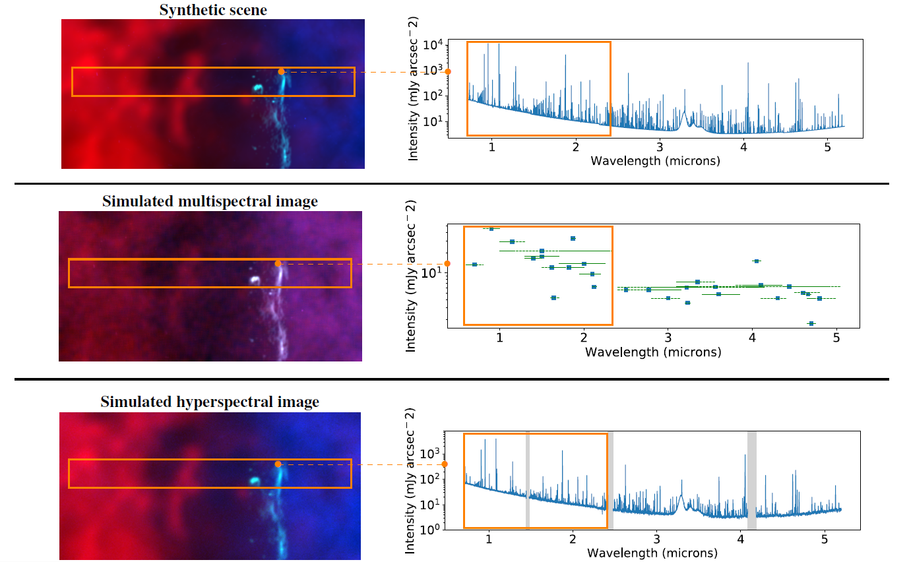
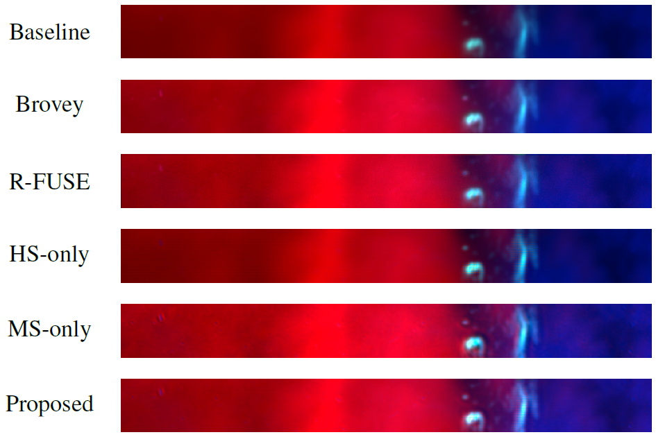

Fusion of hyperspectral and multispectral images under spectrally variant spatial blurs - Application to James Webb Space Telescope (JWST) data
(see also here)
Hyperspectral imaging has become a significant source of valuable data for astronomers over the past decades. Current instrumental and observing time constraints allow direct acquisition of multispectral images, with high spatial but low spectral resolution, and hyperspectral images, with low spatial but high spectral resolution. To enhance scientific interpretation of the data, we propose a data fusion method which combines the benefits of each image to recover a high spatio-spectral resolution datacube.
Fig. 1. Fusion process.
Simulated JWST datasets
In the particular applicative context of the JWST, a first contribution consists in proposing a generic framework to model a synthetic scene of high spatial and spectral resolutions and the corresponding multispectral and hyperspectral images that would be observed by two specific instruments, namely NIRCam and NIRSpec (IFU). Some results are depicted in Fig. 2.
Fig. 2. Synthetic scene and observed multispectral and hyperspectral image.
This framework has been described in the paper published in the Astrophysical Journal:
Fast fusion of multiband images
The fusion task is formulated as an inverse problem which accounts for the specificities of astronomical instruments, such as spectrally variant blurs, as depicted in Fig. 3.
Fig. 3. PSFs of the NIRCam Imager (top) and NIRSpec IFU (bottom) calculated with webbpsf for two particular wavelengths (logarithmic scale).
We provide a fast implementation by solving the problem in the frequency domain and in a low-dimensional subspace to efficiently handle the convolution operators as well as the high dimensionality of the data. Some results are depicted in Fig. 4.
Fig. 4. From top to bottom: RGB compositions of fused images reconstructed by the baseline, Brovey, R-FUSE, HS-only, MS-only and proposed method.
The algorithm is detailed in the paper published in IEEE Trans. Computational Imaging:
The corresponding codes are available below.
- Python codes
 [GitHub].
[GitHub].